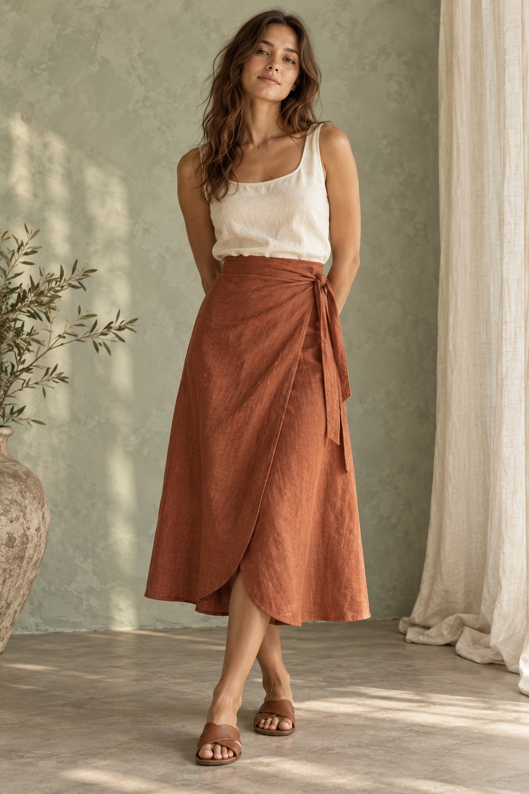
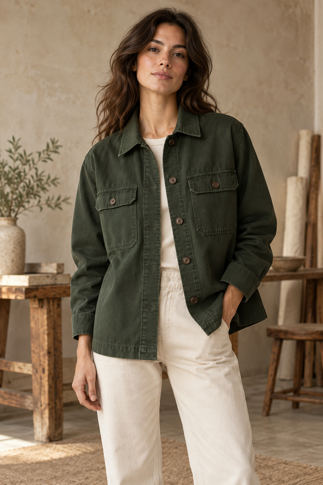

Candidate · needs source qualification
Skirt · ties and overlap
The wrap skirt
Explore panels, overlap, grain and why a waistband must meet its edges.
Project concept
Understand the pieces. Prepare with confidence. Get help right where you are in the making.

From first inspiration to the moment you need to unpick a seam, the same project keeps its context.
Link finished form to technical pieces, joining edges, grain, fold and cut count.
Know which measurements, materials, tools and steps matter for your version.
Check a specific symptom at the active step instead of starting a generic chat.
Distinct constructions, not a row of recolors. Exact patterns need source and maker review before release.
Explore panels, overlap, grain and why a waistband must meet its edges.

A different construction journey: collar, sleeve, placket and patch pockets.
Start a plan from an idea or photo; confirm features and find the missing pattern facts.
A calm place for the idea, the pattern, the preparation and every step after.
Flat pieces, fold, grain and the joins that turn them into clothing.
The active step holds your pieces, marks, source and next check together.